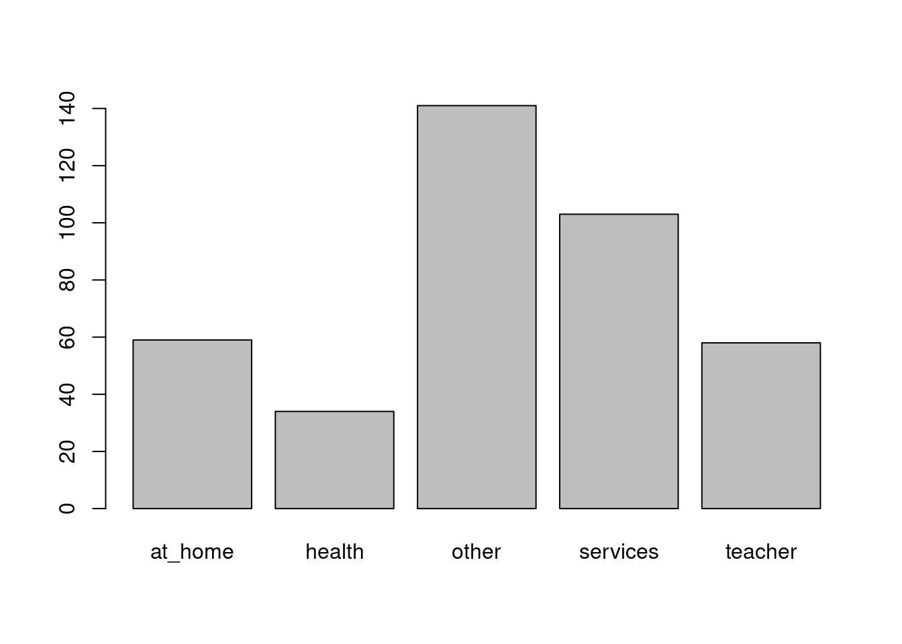
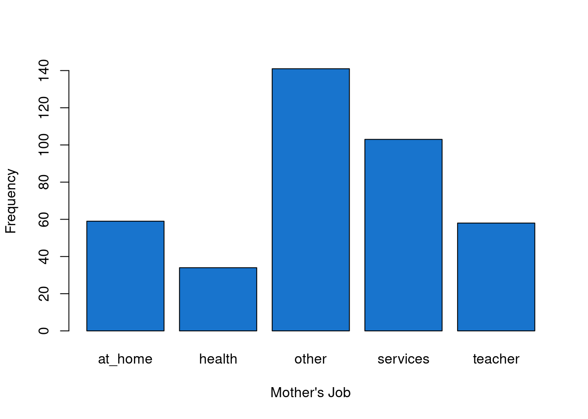
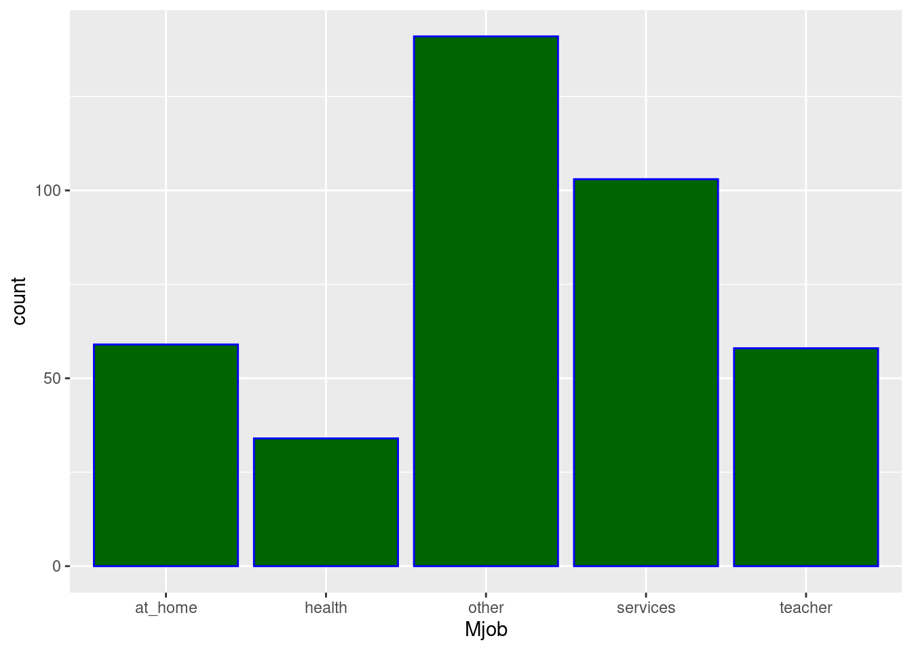

Chapter 1 Measures of Central Tendency - Mean, Median, Mode
1.1 Mean
The mean or average or arithmetic mean of the variable we are interested in can be easily computed. This is one of the most commonly used/reported descriptive statistics. Reporting the mean is done easily and is easily interpreted and understood by most stakeholders and audiences. The mean can only be calculated on variables that are measured on an interval or ratio level.
\[\Large \bar{x}\;=\;\frac{\sum{X}}{N} \]
## [1] 146.6875## [1] 146.68751.2 Median
“The \(Median\) is the score at or below which 50% of the scores in a distribution fall” (Hatcher, p.64). For example if the median horsepower in the mtcars data set is 123. This means that \(50\%\) of the cars in the mtcars data set have horsepower below 123.
There are two different approaches for calculating the median. This depends on if the the number of observations are even or odd. Therefore we have two distinct formulas for calculating the median.
1.2.1 Median if number of observations is Odd
\[ If\;n\;(number\;of\;observations)\;is\;Odd \; \\ \; median\;=\;\frac{(n+1)}{2} \]
## [1] 395## [1] 198## [1] 111.3 Mode
“The \(mode\) \(M_{o}\) is the most frequently-occurring value in a distribution.” (Hatcher, p.66, 2015) For a particular data set the mode could be uni-modal (one mode) or bi-modal (two modes). This is dependent on the data that is present. Utilizing certain statistical techniques we can find the mode of a data set. The mode should be used with nominal data as it is most appropriate to use it at that time. Here we can use the mode with our student data set as there are several nominal (categorical) variables available in the data set.
\[ Mode \]
###Load the ggplot2 library
library(ggplot2)
# ###Create table with frequency to help in finding the mode of a variable in a data set
# mtcars_frequency_df<- as.data.frame(table(mtcars$hp))
#
# ###Add column names to mtcars_frequency_df data frame
# colnames(mtcars_frequency_df) <- c("HP","Frequency")
#
# ###Order mtcars data set by frequency in HP
# mtcars_frequency_df[order(mtcars_frequency_df$Frequency,decreasing = T),]
###Working on best way to bin
student_mjob<- table(student$Mjob)
barplot(student_mjob)

# Bar graph frequencies in hp using ggplot2 and geom_bar
ggplot(data = student, aes(x = Mjob)) +
geom_bar(colour="blue",fill="darkgreen")
1.4 Measures of Variability
According to Hatcher (2013) the measure of variability is the amount of dispersion displayed by a set of observations (scores). We can see how spread out something such as horsepower is spread out in the mtcars data set by utilizing the following statistical tests. Using these techniques in turn gives us better insight into the variability of scores in our data set.
Here we can see the range for the hp variable in the mtcars data set is \(283\)
1.4.1 Range
###Find the range of hp in the mtcars data set
###Maximum
max_hp <- max(mtcars$hp)
###Minimum
min_hp <- min(mtcars$hp)
###Range of hp in the mtcars data set
mtcars_range <- max_hp-min_hp
print(paste0("Range of hp in mtcars data set: ",mtcars_range))## [1] "Range of hp in mtcars data set: 283"Similar to what you would have learned in algebra we have two other types of ranges we will discuss. The interquartile range and the semi-interquartile range.
1.4.2 Interquartile Range
IQR (Interquartile Range):
- Difference between the \(Q_{3}\) (third quartile) versus the \(Q_{1}\) (first quartile)
- Two scores that capture the middle 50% of the distribution
\[ IQR\;=\;Q_{3}\;-\;Q_{1} \]
Here we can utilize the built in \(IQR()\) function in R to find the interquartile range.
## [1] 83.51.4.3 Sum of Squares
According to Hatcher (2013) the sum of squares or \(SS\) is the sum of all of the deviations squared for all observations in a data set. We are simply adding together all the squared deviations of the observations in our variable of interest in our data set.
\[ SS\;=\;\sum(X-\overline{X})^2 \]
###Load our variable into a data farme
ssq_hp_data_frame <- as.data.frame(mtcars$hp)
###Apply the mean function to a column in our data frame
ssq_hp_data_frame$avg <- apply(X = ssq_hp_data_frame,2,mean)
###Get the standard deviation of our column
ssq_hp_data_frame$sd <- ssq_hp_data_frame$`mtcars$hp` - ssq_hp_data_frame$avg
###Sum of squares column
ssq_hp_data_frame$sum_of_square <- ssq_hp_data_frame$sd^2
print(ssq_hp_data_frame)## mtcars$hp avg sd sum_of_square
## 1 110 146.6875 -36.6875 1345.97266
## 2 110 146.6875 -36.6875 1345.97266
## 3 93 146.6875 -53.6875 2882.34766
## 4 110 146.6875 -36.6875 1345.97266
## 5 175 146.6875 28.3125 801.59766
## 6 105 146.6875 -41.6875 1737.84766
## 7 245 146.6875 98.3125 9665.34766
## 8 62 146.6875 -84.6875 7171.97266
## 9 95 146.6875 -51.6875 2671.59766
## 10 123 146.6875 -23.6875 561.09766
## 11 123 146.6875 -23.6875 561.09766
## 12 180 146.6875 33.3125 1109.72266
## 13 180 146.6875 33.3125 1109.72266
## 14 180 146.6875 33.3125 1109.72266
## 15 205 146.6875 58.3125 3400.34766
## 16 215 146.6875 68.3125 4666.59766
## 17 230 146.6875 83.3125 6940.97266
## 18 66 146.6875 -80.6875 6510.47266
## 19 52 146.6875 -94.6875 8965.72266
## 20 65 146.6875 -81.6875 6672.84766
## 21 97 146.6875 -49.6875 2468.84766
## 22 150 146.6875 3.3125 10.97266
## 23 150 146.6875 3.3125 10.97266
## 24 245 146.6875 98.3125 9665.34766
## 25 175 146.6875 28.3125 801.59766
## 26 66 146.6875 -80.6875 6510.47266
## 27 91 146.6875 -55.6875 3101.09766
## 28 113 146.6875 -33.6875 1134.84766
## 29 264 146.6875 117.3125 13762.22266
## 30 175 146.6875 28.3125 801.59766
## 31 335 146.6875 188.3125 35461.59766
## 32 109 146.6875 -37.6875 1420.34766## [1] 145726.9## [1] 145726.9###Take the sum of the vector (hp) and subtract the mean and square the sum of the vector
sum((mtcars$hp-mean(mtcars$hp))^2)## [1] 145726.9## Loading required package: biglm## Loading required package: DBI## [1] 145726.9## [1] 36.3241## [1] 36.32411.4.4 Variance
“The variance is a measure of variability computed by taking the average of the squared deviations from the mean.” (Hatcher, p. 77, 2015)
1.4.4.1 Population Variance
Population variance formula
\[ \sigma^2=\frac{\sum(X-\mu)^2}{N} \] \[ \sigma^2=\;the\;population\;variance \\ X\;=\;participant's\;score\;on\;the\;variable\;of\;interest \\ \mu=population\;for\;the\;variable\;of\;interest \\ N=\;the\;number\;of\;observations\;in\;the\;population \]
1.4.4.2 Sample Variance
“It is appropriate to compute a \(sample variance\) \(S^2\) when you have scores for just a sample and you wish to compute a \(descriptive statistic\) to describe the variability of scores in just that sample.” (Hatcher, 2013 p.79) The sample variance referred to here is sometimes referred to as the \(biased\;estimate\;of\;population\;variance\). This result will be larger than the unbiased estimate.
1.4.4.2.1 Biased estimate of population variance
###Biased sum((mtcars\(mpg-mean(mtcars\)mpg))^2)/(32)
\[ S^2=\frac{\sum(X-\overline{X})^2}{N}\;also\;shown\;as\;\frac{1}{N}\sum_{i=1}^{n}(x_{i}-\mu)^2 \]
1.4.4.2.2 Unbiased estimate of population variance
The statistic that will result from this is an \(inferential\) statistic. “An \(inferential\;statistic\) is a value computed by analyzing data from a sample for the purpose of estimating some characteristic of the larger population” (Hatcher, 2013, p.81)
\[ s^2=\frac{\sum(X-\overline{X})^2}{N-1}\;also\;shown\;as\;\frac{1}{n-1}\sum_{i=1}^{N}(x_{i}-\mu)^2 \]
## [1] 36.3241## [1] 36.3241## [1] 36.3241